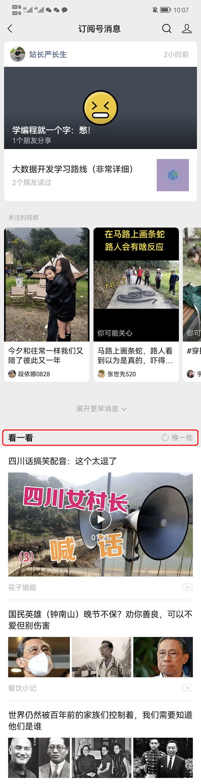

冒死揭露一点真相
咱们公众号创办于 2021 年 10 月底，到现在已经一年半了。
这期间我经历了一些不大不小的波折，听说了不少号主的精彩故事，也算是对公众号有所了解，能够说一说内幕了。
前几年的公众号，简直就是一个暴利机器，能够抓住这个风口的创业者，基本都咸鱼翻身，跨越阶级了。这篇文章，我就作为一个亲历者，大胆地曝光一下公众号的盈利模式。
之所以用「冒死」这两个字，主要是怕惹恼自己的粉丝，让带货效果变差，酿成一场滑稽的自杀。
不过无所谓了，作为一个又臭又硬的理工男，站长即使不挣钱，也想说点真话。
接下来，咱们就正式开始揭露公众号的盈利模式。
从整体上看，公众号的盈利模式主要分为两种，一种是带货，一种是接广告，其中第二种又简单又暴利，还非常稳定。
在文章开头/中间/末尾插入广告，或者单独发一篇软文介绍产品，都是没问题的，站长也是这么干的。
至于卖什么东西，这个就没有限制了，你可以录制自己的课程，也可以生产自己的硬件，还可以代理别人的品牌。
不同公众号的带货效果差距是非常大的，这与你的文案功底和选品策略都有关系。一篇阅读量 1W 的文章，可能产生 2K 的利润，也可能产生 2W 的利润，它的浮动范围很大，没法一概而论。
2015 年站长曾经创办过一个公众号，其中有一篇宣传C语言课程的文章，阅读量在 9K 左右，最终收益超过了 5W。
另外，只在文章里面插入固定广告的效果往往差强人意，一篇阅读量 1W 的文章，能带来 3K 收入就不错了。而且随着人们审美疲劳，带货效果会越来越差，最终可能不足 1K。
这意味着，除了固定广告，每个月你还要单独发几篇带货软文，专门去推广你的产品。这些软文的内容肯定不能重复，否则读者就要骂娘了。
这件事情是很难的，因为你的产品是不变的，而你却要从不同的角度，说不同的优点，讲不同的故事，卖不同的情怀。这就好像每个节日都要给老婆送不同的礼物，而且必须让她尖叫，实在是太烧脑了。
只有那些文笔出彩、创意满格的号主，才能针对一种产品写出多种文案。
公众号带货与其说是卖产品，不如说是卖人设，很多粉丝可能并不特别需要你的产品，但是却被你的某种观点或者情怀所打动，从而引起他的共鸣，并付费支持你的事业。
说白了，你有多煽情，就有多挣钱。
如果你还听不懂，请看看「相声演员罗永浩」和「鸡汤王子董宇辉」就知道了，他们都是卖人设卖情怀的头部 IP。
甲方把文章准备好以后，你直接采集过来发布就行，连标题和排版都不用管。
在不引起读者强烈排斥的前提下，一个日更的公众号，每个月可以安排 6 期头条广告。
前几年公众号的打开率比较高，普遍都在 7% 以上，然后广告文章的标题又非常吸睛，轻松就能冲到 10% 的打开率。那几年公众号广告也值钱，一个阅读一块钱左右。
咱们公众号有 19W 粉丝，发布一条广告就有 1.9W 阅读，这样给甲方要 1.5W 的广告费还是比较容易的；如此一来，站长一个月就能赚 9W。
这个收入实在太恐怖了，比自己带货还要赚钱，还要稳定，还要轻松；更关键的是，这属于被动收入，甲方会主动找上门，挤爆你的排期。
按照这个比例计算，10W 粉丝就能月入 5W，100W 粉丝就能月入 50W。
如果你还给自己带货，那么收入还会增加，根据站长的经验，10W 粉丝保守月入 2W，百万粉丝保守月入 20W。
把广告和带货加在一起，10W 粉丝一个月能收 7W，100W 粉丝一个月能收 70W，太特么暴利了。
站长的粉丝有 19W，这样算下来一个月能收 13W，轻松碾压阿里 P7 大神。
玩转「广告+带货」的号主，前些年都赚翻了。
更让人羡慕的是，前些年的粉丝也特别好搞，各种灰色操作和黑客增长还没有被官方限制，抖音快手也还没有崛起，你轻易就能吸引十万粉丝。
公众号是一个五年不遇的巨大风口，早期进去的创业者都淘金成功了。
这是公众号的上半场，你只需要采集文章就行，不需要大量搞原创，因为采集文章的打开率也很高，没必要搞原创。
这个阶段是最容易淘金的，前文说的「7% 以上打开率，10W 粉丝月入 7W 元」的盛况，就发生在这个阶段。
从 2013 年开始算起，这种盛况大概持续了 7 年。
2020 年 6 月之后，微信改变了公众号文章的排序规则，学习抖音快手加入了推荐算法，在后台标记出用户常读的、喜欢的公众号，这些公众号发布的文章会被优先推荐，所以排名比较靠前。
至于那些垃圾公众号，即使它最晚发布的文章，排名可能也非常靠后，很难被用户看到。
排名直接影响打开率，排名靠后的文章基本也就歇菜了。
腾讯通过调整文章排名，不但降低了用户接收垃圾文章的数量，还把优质文章筛选出来。站在用户的角度，这确实是一件好事。
但是根据各位号主的反馈，不管是垃圾公众号还是优质公众号，文章打开率普遍都降低了，非常遭受打击。
现在公众号文章的平均打开率已经降到了 2% 左右，其中垃圾公众号的打开率只有 1%，优质公众号的打开率在 4%~5%。
这给公众号创业者带来了降维打击，收入成倍下滑，信心彻底丧失，很多人都已经转战其它平台，不再用心打理公众号。
另外还有更糟糕的，就是有了抖音快手等短视频平台的竞争，用户时间都被抢走了，坚持阅读公众号的人越来越少，所以打开率会一直走低。即使那些优质公众号，也无法避免被时代的洪流碾压。
抖音快手除了带走了用户时间，也带走了甲方爸爸，他们不再把公众号当做唯一的推广渠道，而是有了更多的选择，这导致了两个严重的后果：
没有阅读量没有广告主，公众号的下半场就是这么惨淡。垃圾公众号已经踝斩，优质公众号已经腰斩。
就说咱们的自己的公众号，前面已经计算过了，上半场能月入 13W；但是拿到现在，一个月收入不到 5W，我还得吭哧吭哧搞原创；如果哪天我不搞原创了，估计连 3W 都赚不到。
然而，你以为公众号的下半场就这么结束了吗？并没有！最近微信又在订阅号列表中加入了信息流：
注意看红线圈起来的地方，上边就是我关注的公众号和视频号，下边就是类似今日头条一样的信息流。
有了信息流功能，微信估计会进一步降低公众号文章的曝光率，从而推荐更多热点内容，变成一个更像新闻的平台。
微信的这种种动作意味着，2020 年 6 月份以后，公众号基本大势已去，荣光不再。
我理解大家的心情，但是我拒绝大家的良言，因为广告是公众号赖以生存的大腿，每个号主每个粉丝都得感谢甲方爸爸的支持，否则就不会有人输出优质内容了。
有人说，站长你可以接一些编程相关的广告呀，为什么要接保险和创业的广告？这个确实有点违和感。
好吧，要是能接到编程广告，我才懒得搭理其它广告呢！互联网产业遇冷，培训班倒了一批又一批，哪还有什么广告可接！
不灰不黑不黄不骗，不违反法律不埋没良知，能接到这样的广告我就谢天谢地了，至于是否和编程相关，呵呵，这已经不在我的考虑范围之内了。
这期间我经历了一些不大不小的波折，听说了不少号主的精彩故事，也算是对公众号有所了解，能够说一说内幕了。
前几年的公众号，简直就是一个暴利机器，能够抓住这个风口的创业者，基本都咸鱼翻身，跨越阶级了。这篇文章，我就作为一个亲历者，大胆地曝光一下公众号的盈利模式。
之所以用「冒死」这两个字，主要是怕惹恼自己的粉丝，让带货效果变差，酿成一场滑稽的自杀。
不过无所谓了，作为一个又臭又硬的理工男，站长即使不挣钱，也想说点真话。
接下来，咱们就正式开始揭露公众号的盈利模式。
从整体上看，公众号的盈利模式主要分为两种，一种是带货，一种是接广告，其中第二种又简单又暴利，还非常稳定。
带货
只要文章有阅读量，你就可以卖东西。在文章开头/中间/末尾插入广告，或者单独发一篇软文介绍产品，都是没问题的，站长也是这么干的。
至于卖什么东西，这个就没有限制了，你可以录制自己的课程，也可以生产自己的硬件，还可以代理别人的品牌。
不同公众号的带货效果差距是非常大的，这与你的文案功底和选品策略都有关系。一篇阅读量 1W 的文章，可能产生 2K 的利润，也可能产生 2W 的利润，它的浮动范围很大，没法一概而论。
2015 年站长曾经创办过一个公众号，其中有一篇宣传C语言课程的文章，阅读量在 9K 左右，最终收益超过了 5W。
另外，只在文章里面插入固定广告的效果往往差强人意，一篇阅读量 1W 的文章，能带来 3K 收入就不错了。而且随着人们审美疲劳，带货效果会越来越差，最终可能不足 1K。
这意味着，除了固定广告，每个月你还要单独发几篇带货软文，专门去推广你的产品。这些软文的内容肯定不能重复，否则读者就要骂娘了。
这件事情是很难的，因为你的产品是不变的，而你却要从不同的角度，说不同的优点，讲不同的故事，卖不同的情怀。这就好像每个节日都要给老婆送不同的礼物，而且必须让她尖叫，实在是太烧脑了。
只有那些文笔出彩、创意满格的号主，才能针对一种产品写出多种文案。
公众号带货与其说是卖产品，不如说是卖人设，很多粉丝可能并不特别需要你的产品，但是却被你的某种观点或者情怀所打动，从而引起他的共鸣，并付费支持你的事业。
说白了，你有多煽情，就有多挣钱。
如果你还听不懂，请看看「相声演员罗永浩」和「鸡汤王子董宇辉」就知道了，他们都是卖人设卖情怀的头部 IP。
接广告
如果说带货是一场个人才艺秀，那么接广告就是傻瓜式操作，没有任何门槛。甲方把文章准备好以后，你直接采集过来发布就行，连标题和排版都不用管。
在不引起读者强烈排斥的前提下，一个日更的公众号，每个月可以安排 6 期头条广告。
前几年公众号的打开率比较高，普遍都在 7% 以上，然后广告文章的标题又非常吸睛，轻松就能冲到 10% 的打开率。那几年公众号广告也值钱，一个阅读一块钱左右。
咱们公众号有 19W 粉丝，发布一条广告就有 1.9W 阅读，这样给甲方要 1.5W 的广告费还是比较容易的；如此一来，站长一个月就能赚 9W。
这个收入实在太恐怖了，比自己带货还要赚钱，还要稳定，还要轻松；更关键的是，这属于被动收入，甲方会主动找上门，挤爆你的排期。
按照这个比例计算，10W 粉丝就能月入 5W，100W 粉丝就能月入 50W。
如果你还给自己带货，那么收入还会增加，根据站长的经验，10W 粉丝保守月入 2W，百万粉丝保守月入 20W。
把广告和带货加在一起，10W 粉丝一个月能收 7W，100W 粉丝一个月能收 70W，太特么暴利了。
站长的粉丝有 19W，这样算下来一个月能收 13W，轻松碾压阿里 P7 大神。
玩转「广告+带货」的号主，前些年都赚翻了。
更让人羡慕的是，前些年的粉丝也特别好搞，各种灰色操作和黑客增长还没有被官方限制，抖音快手也还没有崛起，你轻易就能吸引十万粉丝。
公众号是一个五年不遇的巨大风口，早期进去的创业者都淘金成功了。
公众号的现状
2020 年 6 月之前，在你的订阅号消息列表之中，所有文章都是按照发布时间来排序的，最晚发布的排在最前边。不管你是否喜欢这个公众号，只要你订阅了，它的文章就会推送给你，所以各个公众号之间是平等的，不区分优劣的。这是公众号的上半场，你只需要采集文章就行，不需要大量搞原创，因为采集文章的打开率也很高，没必要搞原创。
这个阶段是最容易淘金的，前文说的「7% 以上打开率，10W 粉丝月入 7W 元」的盛况，就发生在这个阶段。
从 2013 年开始算起，这种盛况大概持续了 7 年。
2020 年 6 月之后，微信改变了公众号文章的排序规则，学习抖音快手加入了推荐算法，在后台标记出用户常读的、喜欢的公众号，这些公众号发布的文章会被优先推荐，所以排名比较靠前。
至于那些垃圾公众号，即使它最晚发布的文章，排名可能也非常靠后，很难被用户看到。
排名直接影响打开率，排名靠后的文章基本也就歇菜了。
腾讯通过调整文章排名，不但降低了用户接收垃圾文章的数量，还把优质文章筛选出来。站在用户的角度，这确实是一件好事。
但是根据各位号主的反馈，不管是垃圾公众号还是优质公众号，文章打开率普遍都降低了，非常遭受打击。
现在公众号文章的平均打开率已经降到了 2% 左右，其中垃圾公众号的打开率只有 1%，优质公众号的打开率在 4%~5%。
这给公众号创业者带来了降维打击，收入成倍下滑，信心彻底丧失，很多人都已经转战其它平台，不再用心打理公众号。
另外还有更糟糕的，就是有了抖音快手等短视频平台的竞争，用户时间都被抢走了，坚持阅读公众号的人越来越少，所以打开率会一直走低。即使那些优质公众号，也无法避免被时代的洪流碾压。
抖音快手除了带走了用户时间，也带走了甲方爸爸，他们不再把公众号当做唯一的推广渠道，而是有了更多的选择，这导致了两个严重的后果：
- 公众号广告的数量减少了，档期排不满了；
- 公众号广告的价格降低了，以编程号为例，能拿到 7 毛钱一个阅读就谢天谢地了。
没有阅读量没有广告主，公众号的下半场就是这么惨淡。垃圾公众号已经踝斩，优质公众号已经腰斩。
就说咱们的自己的公众号，前面已经计算过了，上半场能月入 13W；但是拿到现在，一个月收入不到 5W，我还得吭哧吭哧搞原创；如果哪天我不搞原创了，估计连 3W 都赚不到。
然而，你以为公众号的下半场就这么结束了吗？并没有！最近微信又在订阅号列表中加入了信息流：

注意看红线圈起来的地方，上边就是我关注的公众号和视频号，下边就是类似今日头条一样的信息流。
有了信息流功能，微信估计会进一步降低公众号文章的曝光率，从而推荐更多热点内容，变成一个更像新闻的平台。
微信的这种种动作意味着，2020 年 6 月份以后，公众号基本大势已去，荣光不再。
最后
99% 的公众号都会接广告，99% 的广告都会被用户骂娘。作为一个公众号运营者，每次发布广告，后台都有一堆要干死我的留言。我理解大家的心情，但是我拒绝大家的良言，因为广告是公众号赖以生存的大腿，每个号主每个粉丝都得感谢甲方爸爸的支持，否则就不会有人输出优质内容了。
有人说，站长你可以接一些编程相关的广告呀，为什么要接保险和创业的广告？这个确实有点违和感。
好吧，要是能接到编程广告，我才懒得搭理其它广告呢！互联网产业遇冷，培训班倒了一批又一批，哪还有什么广告可接！
不灰不黑不黄不骗，不违反法律不埋没良知，能接到这样的广告我就谢天谢地了，至于是否和编程相关，呵呵，这已经不在我的考虑范围之内了。
关注公众号「站长严长生」，在手机上阅读所有教程，随时随地都能学习。内含一款搜索神器，免费下载全网书籍和视频。

微信扫码关注公众号